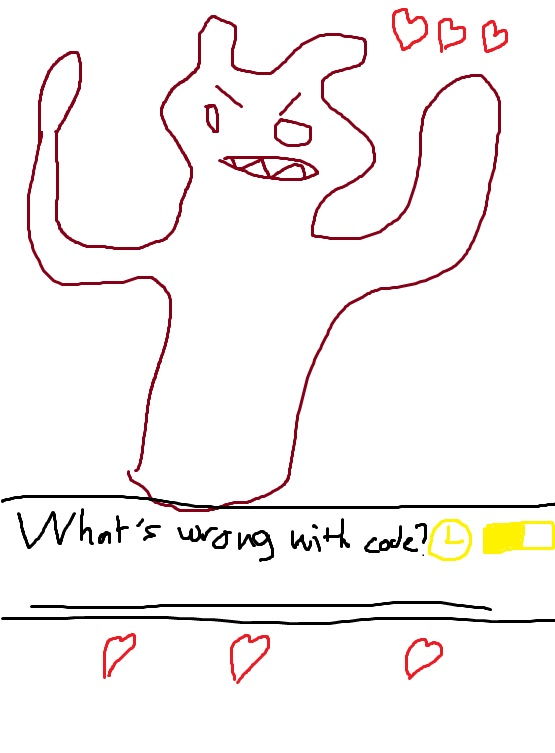
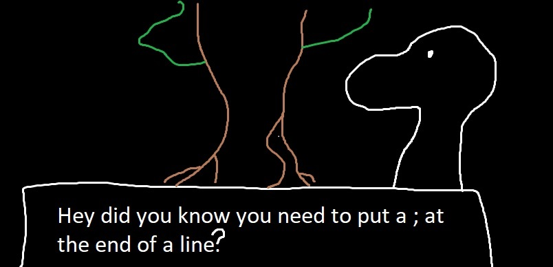

“Saving Code!” Is a game in which you are taught methods of coding or lines of code and then after reviewing the information (given by npcs) you will be put forth against a boss battle and complete tasks relating to the stuff you have learned. The title is a play on words of saving grace, as the story is that you are a human chosen by a deity named 01100111 01101111 01100100 (or 01 for short) to defeat the forces of evil that would soon plague Earth. The “evil” would be devils that would hope to conquer Earth but are weak to proper code lines.
The reason I’ve decided to create a game is that games require a decent amount of code which would be great practice in order to get to experience for future programming positions. The traditional method of learning can be quite boring for some and for certain types of learners it simply just doesn’t work. Turning learning into a game format would make the content more entertaining as well as have a fun difficulty to the information they are studying. Games are also a favourite hobby of mine, I spend most of my free time playing them. Turning my passion into a form of education for others seems like the surefire way for me to create a successful and useful product.
The game is quite simple.At the beginning of a new game you pick a programming language, such as Python, Java, C++ etc. The game will then adjust the levels to work with the language you’ve selected. At the beginning of each act (the number of acts yet undecided) you would learn things about code or coding in general such as practices from an npc, and would complete a short exercise to appease the character and pass the level.
After a small series of these exercises a ‘big bad guy’ appears and challenges you to a duel. Prompts asking questions relevant to the content you have just learned will pop up with a timer so that the player cannot quickly google a question or spend too long remembering it (the game is meant to be quick and exciting). Answering these questions correctly will take a ‘heart’ (health) from the enemy, and failing to answer the question on time or incorrectly will take a heart from the player. First one to 0 hearts loses.
This repeats with the acts getting harder, to add a difficulty curve and eventually you beat the final boss and save Earth! A grading score will be displayed at the end of each chapter and the game (From SSS-F) based on how quick you answered the questions, how much life you have left etc.
The game will also feature an ‘endless’ mode in which you face bosses without learning (because it’s done in the main game) and see how many bosses you can beat before being defeated.
The option of a player vs player (pvp) model is also available as two players see who can answer the question quicker, until one’s hearts fall to 0. As well as a leaderboard for most wins.
In terms of the software needed to create this game, a general game making software would be sufficient for the code and back bone of the game. Programs like Unity, GDevelop and many more can work. Programming language such as C#, C++ or even Java would do to code. As for the art style and assets, do to it being a 2d game Photoshop or Clip Studio Paint will do. For the hardware any computer with a general processor and graphics card (integrated or not) would be able to run the low end game, as it wouldn’t be as flashy as anything like the Witcher 3.
To do this I would have to of course know how to code a game, in any of the languages mentioned above. Unfortunately I have little to none of these skills in me. That’s why to make this project I would need to study extensively on many coding languages (as the game teaches multiple languages) in order to deliver accurate information. Online study such as the one I’m doing right now would suffice for maybe one or two languages but after that I would need to go out of my way to learn more. It would be hard to do the project solo, so I could gather some other programmers who are interested to help me on flushing out the different languages. They could tell me how Python works if I don’t know for example. Learning these types of things will be hard, but so would anything to do with programming!
If this project were to be successful it would hopefully help a lot of people warm up to the idea of becoming programmers or taking a general interest in the technology world. It would also help current programmers refresh their memory or do exercises in order to help them memorise things through a fun interactive method rather than, say, boring cue cards. In no way do I think this project is ‘revolutionary’ however I do think it can help a lot of people, myself included learn basic code and open up a path to an interesting area of civilisation.
Below I have included some concept art, note that I am not an artist:
Boss Battle:
Interaction with an NPC:
